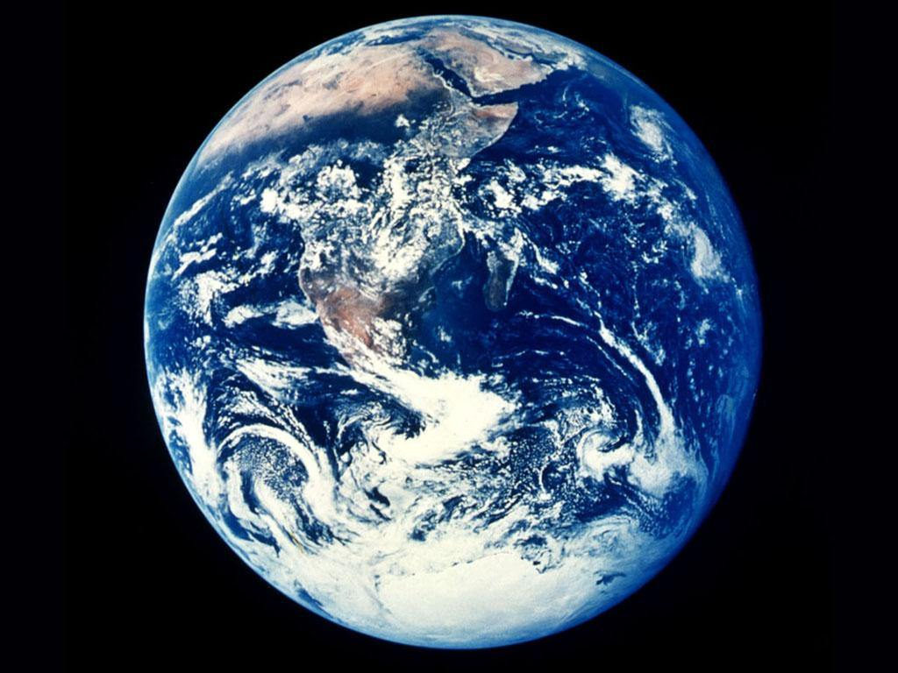
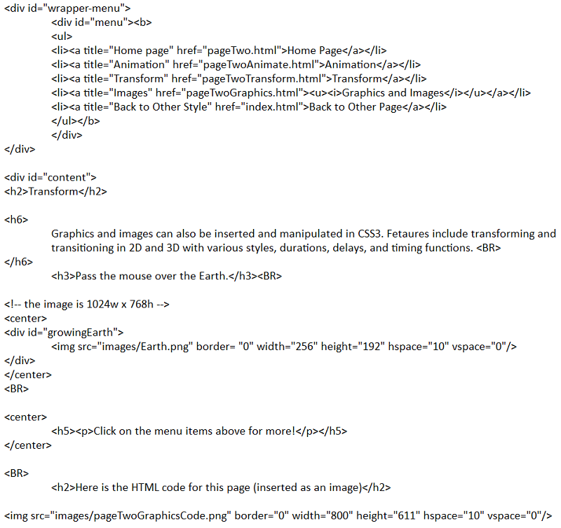

Transform
Graphics and images can also be inserted and manipulated in CSS3. Fetaures include transforming and
transitioning in 2D and 3D with various styles, durations, delays, and timing functions.
Pass the mouse over the Earth.

Click on the menu items above for more!
Here is the HTML code for this page (inserted as an image)
